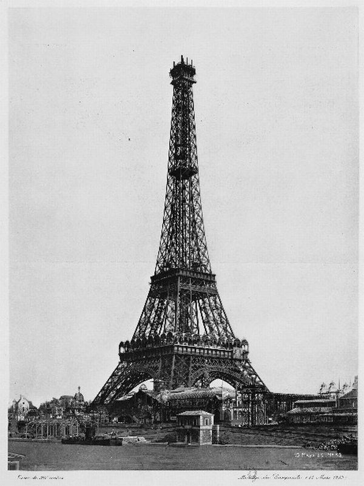
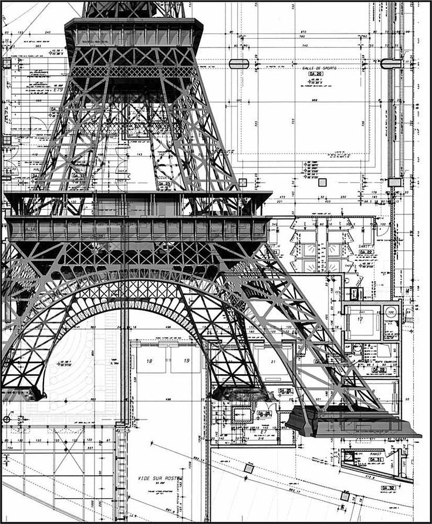
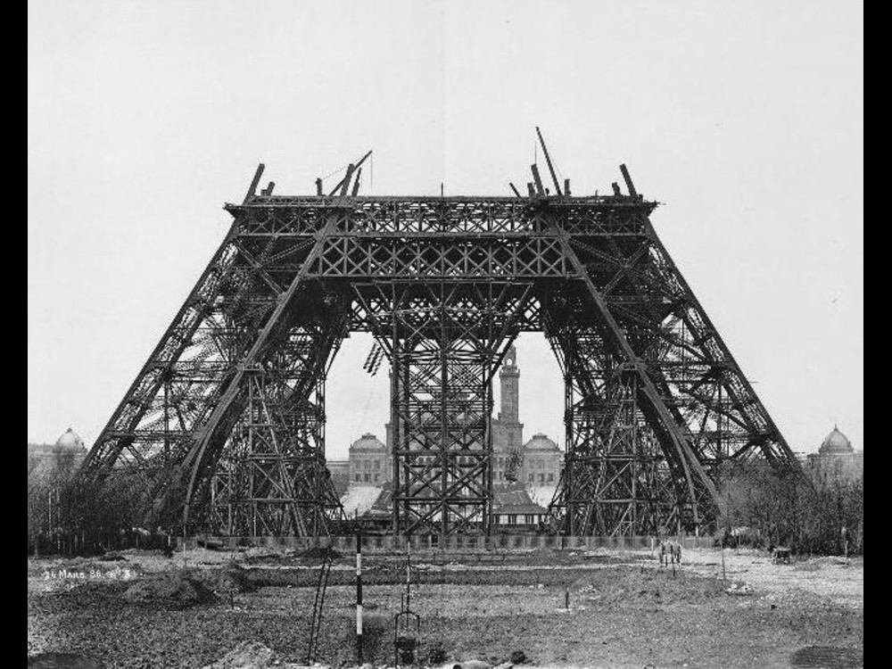

Concebida en 1884, edificada entre 1887 y 1889 e inaugurada para la exposición universal de 1889 en París, la torre Eiffel simboliza hoy en día a un país entero. Sin embargo, no siempre fue así, y en sus orígenes fue tan solo un elemento más de la imagen con la que Francia quiso mostrar al mundo la pujanza económica del país.60 Desde 1875, la Tercera República naciente, que se caracterizó por su crónica inestabilidad política, apenas se podía sostener. En el gobierno, los partidos políticos se sucedían a un ritmo constante. Según Léon Gambetta (primer ministro entre 1881 y 1882), los gabinetes estaban a menudo formados por ministros "oportunistas", pero cuya obra legisladora puso las piedras de los principios todavía vigentes en el presente: escuela obligatoria, laicidad, libertad de prensa, etc. La sociedad de la época pone una gran atención en los progresos técnicos y en el progreso social. Es esta fe en los beneficios de la ciencia lo que dio origen a las exposiciones universales. Pero ya desde la primera exposición (Gran Exhibición de los Trabajos de la Industria de todas las Naciones; la "Great Exhibition of the Works of Industry of All Nations", Londres, 1851), los gobernantes perciben rápidamente que detrás de la apuesta tecnológica se perfila un eficaz escaparate político, y sería un error no aprovechar la oportunidad. Demostrando su destreza industrial, el país anfitrión puede hacer gala de su adelanto y de su superioridad sobre las otras potencias europeas, que reinaban entonces en el mundo.
En junio de 1884, dos ingenieros de la empresa Eiffel, Maurice Koechlin y Émile Nouguier, jefe de la oficina de proyectos y jefe de la oficina de métodos respectivamente, estudian el proyecto de una torre metálica de 300 metros. Esperan poder hacer de ella el centro de atención de la Exposición de 1889. El 6 de junio exactamente, Maurice Koechlin realiza el primer croquis del edificio. El dibujo representa una torre de 300 metros de altura, donde las cuatro caras curvas están unidas por plataformas cada 50 metros hasta llegar a la cumbre. Gustave Eiffel dice no estar interesado en el proyecto, aunque concede a los dos diseñadores la autorización para proseguir con el estudio. Stephen Sauvestre, arquitecto en jefe de la empresa Eiffel es llamado para colaborar en el proyecto y vuelve a dibujar completamente el edificio para darle otra envergadura: añade un pesado pie de mampostería y une la torre hasta el primer piso mediante arcos, reduce el número de plataformas de cinco a dos, y hace del diseño de la torre algo parecido a un faro, entre otros cambios.
En junio de 1884, dos ingenieros de la empresa Eiffel, Maurice Koechlin y Émile Nouguier, jefe de la oficina de proyectos y jefe de la oficina de métodos respectivamente, estudian el proyecto de una torre metálica de 300 metros. Esperan poder hacer de ella el centro de atención de la Exposición de 1889. El 6 de junio exactamente, Maurice Koechlin realiza el primer croquis del edificio. El dibujo representa una torre de 300 metros de altura, donde las cuatro caras curvas están unidas por plataformas cada 50 metros hasta llegar a la cumbre. Gustave Eiffel dice no estar interesado en el proyecto, aunque concede a los dos diseñadores la autorización para proseguir con el estudio. Stephen Sauvestre, arquitecto en jefe de la empresa Eiffel es llamado para colaborar en el proyecto y vuelve a dibujar completamente el edificio para darle otra envergadura: añade un pesado pie de mampostería y une la torre hasta el primer piso mediante arcos, reduce el número de plataformas de cinco a dos, y hace del diseño de la torre algo parecido a un faro, entre otros cambios.
Inicialmente, Gustave Eiffel (ingeniero y especialista en estructuras metálicas) había previsto doce meses de trabajo, aunque en realidad se necesitó el doble de tiempo. La fase de construcción comenzó el 28 de enero de 1887 y terminó en marzo de 1889, antes de la apertura oficial de la Exposición universal. A pie de obra, el número de trabajadores nunca superó los 250. Esto se debió a que gran parte del trabajo se hacía río arriba, en las fábricas de las empresas Eiffel localizadas en Levallois-Perret. De los 2 500 000 remaches que hay en la torre, solo 1 050 846 se colocaron en obra, un 42 % del total.6 La inmensa mayoría de los elementos son ensamblados en los talleres de Levallois-Perret, en el suelo, en trozos de cinco metros, con pernos provisionales; y solo después, in situ, son definitivamente reemplazados por remaches puestos con calor (roblones).
El trabajo estructural principal se completó a finales de marzo de 1889, y el mismo día 31 de marzo, Eiffel lo celebró guiando a un grupo de funcionarios del Gobierno (acompañados por representantes de la prensa), a la parte superior de la torre.71 Debido a que los ascensores no estaban todavía en operación, el ascenso se hizo a pie, y les llevó más de una hora, con Eiffel parando con frecuencia para explicar las diversas características de la estructura. La mayor parte del grupo se quedó en los dos pisos más bajos, pero unos pocos, entre ellos el ingeniero estructural Émile Nouguier (el director de la obra), Jean Compagnon (Presidente del Consejo de la Ciudad), y los reporteros de Le Figaro y de Le Monde Illustré, completaron el ascenso. A las 2:35 de la tarde, Eiffel izaba una gran bandera tricolor con el acompañamiento de una salva de 25 disparos de cañón desde el primer nivel.